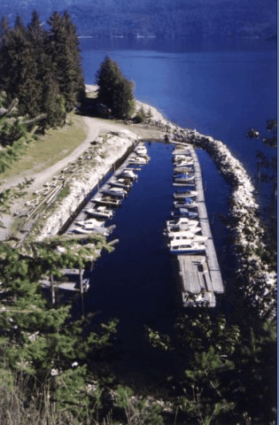

<table class="tableborder" width="80%" border="0" cellspacing="0" cellpadding="0" align="center" bgcolor="#D9EDFD">
	<tr>
		<td class="tbborder" width="150" bgcolor="#D9EDFD">
			
		</td>
		<td>
			<table width="80%" border="0" cellspacing="0" cellpadding="0" align="Center">
				<tr>
					<td width="100%">
						<p>
							<b><font size=6>How to find us</font></b>
						</b>
						<font size=4>
							<ul>
								<li>Click on this link to
									<a href="http://maps.google.ca/maps?f=q&source=s_q&hl=en&geocode=&q=schroeder+creek+resort&sll=49.891235,-97.15369&sspn=19.968191,35.859375&ie=UTF8&z=12"
									 TARGET="_new">Google Maps </a>
								</li>
							</ul>
							<ul>
								<li>Located on Kootenay Lake, 15 km (9 miles) north of Kaslo, British Columbia</li>
								<li>Paved highway right to the resort</li>
								<li>From Southern BC (Creston):</li>
								<ul>
									<li>
										<i>Take Highway 3A north to Crawford Bay, take free Kootenay Lake Ferry to Balfour, Take Highway 31 north to Kaslo,
											Continue north on Highway 31 for 15 km, Schroeder Creek Resort is on the right</i>
									</li>
								</ul>
								<li>From Southern BC (Nelson):</li>
								<ul>
									<li>
										<i>Take Highway 3A north to Balfour, Continue north on Highway 31 to Kaslo, Continue north on Highway 31 for 15 km,
											Schroeder Creek Resort is on the right</i>
									</li>
								</ul>
								<li>From Northern BC (Revelstoke):</li>
								<ul>
									<li>
										<i>Take Highway 23 south to Shelter Bay, take free Upper Arrow Lakes Ferry to Galena Bay, continue on highway 23 to
											Nakusp, then take Highway 6 to New Denver, then Highway 31A to Kaslo, then take Highway 31 and continue north
											of Kaslo for 15 km, Schroeder Creek Resort is on the right</i>
									</li>
									<ul></ul>
								</ul>
							</ul>
							<br>
							<a href="images/SchroederCreekMap.bmp" TARGET="new">Map</a>&nbsp;&nbsp;
							<a href="http://www2.gov.bc.ca/gov/content/transportation/passenger-travel/water-travel/inland-ferries"
								TARGET="new">Ferry schedules</a>
						</font>
					</td>
				</tr>

			</table>
		</td>
	</tr>
</table>